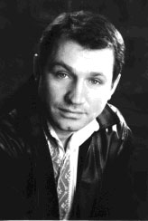

|  | Анонс |
НИКОЛАЕВСКИЙ БЛАГОТВОРИТЕЛЬНЫЙ КОНЦЕРТ АНАТОЛИЯ ГНАТЮКА
Когда на углу улиц Спасский спуск и Фрунзе в сквере возле Яхт-клуба и старого Варваровского моста после благословления владыкою Питиримом закладки строительства православного Свято-Екатерининского храма выступил наш мэр, Владимир Дмитриевич Чайка, то он пророчески заметил: «Если Богу будет угодно, то храм будет построен»…
С тех пор прошло почти 5 лет и храм волею Божьей постепенно поднимается уже из небытия усилиями его главного строителя Алексея Алексеевича Панна и добрых людей. Генерального спонсора этого строительства, к великому сожалению, до сих пор не удалось найти. Нет еще у нас таких традиций вкладывать в святое дело деньги, по христиански, без широкой огласки. В основном помогают понемногу не очень состоятельные люди, знавшие в свое время Екатерину Панну и преклонявшиеся перед ее талантом пианистки и душевного человека. Одним из таких людей является заслуженный артист Украины, актер Национального академического театра имени Ивана Франко Анатолий Гнатюк.
Раньше уже наши газеты писали о том, что отец посвятил этот храм дочери, лауреату самых престижных в Европе конкурсов пианистов. Екатерина Панна (1978-1999) очень любила театр и чаще всего посещала театр им. Франко в Киеве. Любовь эта была взаимной – многие из артистов этого театра восхищались ее пианистическим талантом. Катя погибла в автомобильной катастрофе недалеко от Парижа и, когда отец самолетом вез ее через Киев в Николаев, то гроб с ее телом для прощания был установлен именно у театра им. Франко.
Матери Кати, Ольге Варленовне, с трудом удалось найти окно в плотном графике работы Анатолия Гнатюка, чтобы оно совпало с возможностями нашего Русского драматического театра. Теперь у николаевцев есть возможность полюбоваться искусством известного столичного артиста. Как пишет к.ф.н. Галина Ильева в его резюме, Анатолий Гнатюк награжден: высшей театральной наградой Украины - «Серебрянной пекторалью»; дипломом II степени и званием лауреата Республиканского конкурса чтецов им. Т.Г. Шевченко (Киев, 1989); дипломом и званием лауреата Республиканского конкурса артистов эстрады ( II премия, Ужгород, 1990), Всеукраинского фестиваля «Песня года»(1998); музыкального телевизионного фестиваля «Шлягер года»(1999), а также отмечен дипломом за психологическую пластичность и колоритность образа Голохвастова в пьесе М. Старицкого «За двумя зайцами» (2001) и благодарностью мэра Киева.
В 1981 г. Анатолий Гнатюк поступил в Киевский театральный институт им. Карпенко-Карого на актерское отделение в класс народной артистки Украины В. И. Зимной. После окончания института с 1985 г. работает в Национальном академическом театре им. Ивана Франко. За годы работы в театре Анатолий Васильевич Гнатюк сыграл более 20 ролей в драматических и комедийных пьесах, сказках и среди них – ряд главных. Любителям театрального искусства запомнились образы Санчо Пансы, Шельменко-денщика, Голохвастова и др., созданные талантливым артистом. В театре «Созвездия» принял участие в постановке пьесы «Сад божественных песен» Валерия Шевчука, в Запорожском драматическом театре создал образ Хлестакова в «Ревизоре» Николая Гоголя. Среди сыгранных ролей в кино нужно отметить роли в телесериалах: Стаса - в « Пані удача »(2001) и капитана Малюты - в «Сьогодні і завжди»(2002).
Талант Анатолия Гнатюка, как шоумена, наверняка был замечен николаевцами в таких разнообразных телепрограммах: Формула кохання »(УТ-1, 1998); «Музична пошта» (УТ-2, 1999); «Демізерабл» (Т V Т , 2001); «Київ театральний з Анатолієм Гнатюком»(ТРК «Київ», 2002); «Лото-Забава» («1+1», с 2003 и до ныне).
Анатолий Гнатюк постоянно выступает на эстраде как певец и чтец с сольной программой « Усміхнемось разом », выпустил песенный аудиоальбом «Крылья», снял два клипа на песни «Королева и Шут» и «Есть такая работа». Одна из его песен, исполняемая дуэтом с родным братом, народным артистом Украины, Николаем Гнатюком – «Ой смереко» - давно полюбилась слушателям и стала почти народной.
Вот что писал театральный критик Олег Просихин по поводу игры Анатолия Гнатюка в пьесе «Шельменко-денщик»: «Особенно хорош был Анатолий Гнатюк в заглавной роли. Выражение «фейерверк на сцене» – так это про него. Сколько разнообразных красок нашел он для своего героя, показав широту его натуры. Шельменко-денщик в исполнении актера предстает перед зрителем то умным и смекалистым, простым и лукавым, то хитрым и наивным, а в общем, добрым, свойским парнем. И все это – в сочетании с удивительным обаянием. Безусловно, Анатолий Гнатюк продолжает лучшие традиции предыдущих исполнителей роли, некоторые из которых вошли в «золотой фонд» украинского театра.
Неудивительно, что почти каждая сцена с участием Гнатюка завершалась громом аплодисментов. Впрочем, и другим исполнителям также не пришлось жаловаться на отсутствие зрительского внимания: тепло принимали всех. Смех и аплодисменты в зале звучали постоянно. После окончания спектакля артистов долго не отпускали со сцены. И, конечно, дарили много цветов. В общем, праздник состоялся». Надеюсь, что встреча с обаятельным артистом и человеком превратится в праздник и в Николаеве.
При добром согласии директора театра Николая Антоновича Кравченко благотворительный концерт Анатолия Гнатюка состоится в среду 20 сентября, в 19 час., в Русском художественном драматическом театре. Вход свободный. Для желающих помочь строительству храма на входе в зал будет установлена копилка для пожертвований, а также будут продаваться книги и два лазерных диска CDR . На дисках помещены экслюзивная видеозапись концерта Екатерины Панны (Бах, Моцарт, Шопен, Шимановский) в зале Киевской консерватории (30 марта 1997 г.), статья «Последнее скерцо Шопена», фото к ней из жизни Кати, а также фото посетивших строительство храма в разное время таких знаменитых людей, как Андрей Вознесенский, Юрий Кублановский, Виктор Москвин, Валентин Никитин и др.
Анатолий Золотухин , председатель Пушкинского клуба